BWA HA HA HA HA HA HA HA HA
Gamzee likes Tavros~ Tavros doesn’t know how to react~
I can’t get over Tavros’s face there.
BWA HA HA HA HA HA HA HA HA
Gamzee likes Tavros~ Tavros doesn’t know how to react~
I can’t get over Tavros’s face there.

Oh, of course John would talk to his Denizen! That is so John.
I am dying to know what Typheus said. And all the other Denizens. But of course there are about 15 other storylines going on.
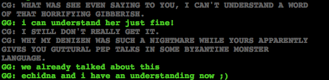
Jade talked to her Denizen too! Why is this only being referenced and not shown? I want to see it now!

A big corpse party!
So, Sollux is dead and somehow left his dream bubble and is chilling with Aradia? Does that mean he’s kind of alive again, or?
(PS questions like that are rhetorical, I don’t need an answer, I am sure I will get there.)
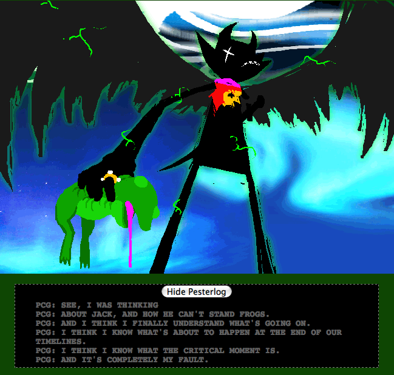
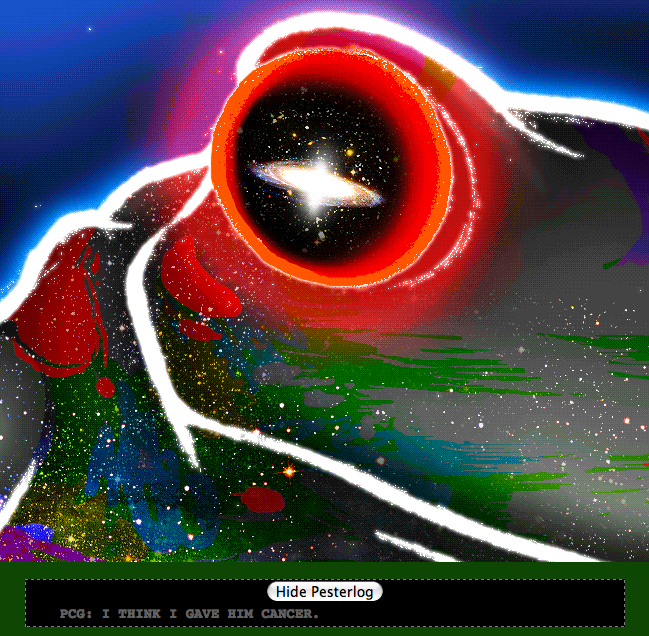
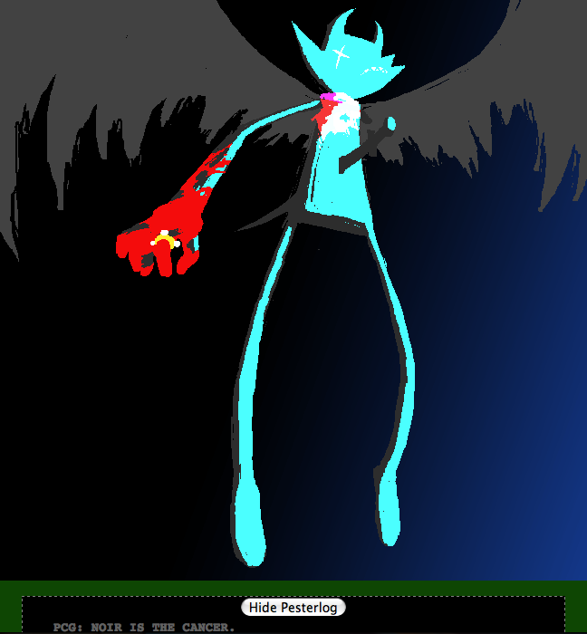
OH.
MY.
GOD.
Poor, poor Karkat, that’s a lot to have on your shoulders. Such a small mistake, such huge ramifications, and he’s so young.
But now the question is, does the scratch replicate the cancer? If it’s restarting to its initial state, the universe would still be lacking that important code, so it would still be ultimately barren, unless our heroes find a way to fix it.


What.
The.
Fuck.
Sooooo does this mean Karkat is wrong about causing the cancer, or did Gamzee just give the cancer shape? A horrifying shape. Fucking Gamzee.

Eeeew. This is so fucking creepy. God, Doc Scratch, stop being so gross.
On the eve of their race’s extinction, the twelve heroes would begin playing a game. They would make an admirable effort, but they would fail. Their civilization had not prepared them for the rigors of this game, and the ultimate reward would fall shy of their grasp. But their failure was more comprehensive, more systemic, than a result of simple inadequacy so common to young players of this game. Though they could not recognize it for the bad omen it was, this session was not the one in which they had been spawned. Such is the symptom of a subtle glitch affecting certain sessions, an error designed to trigger an unfathomable cascade of misfortune throughout paradox space. This glitch is the calling card of the one I serve. It is the discreet, gentlemanly manner in which he reserves his place in a universe for later visitation.
Holy shit. So, the trolls are actually on their second go as a species, and their session and/or universe was fucked to begin because it was set up for Lord English.
The young twenty-four would again be scattered in two groups, twelve modern contemporaries, and twelve ancients. But in addition to losing their memories of everything that had happened before the scratch, there was another catch for the failed heroes. In the new reality, they would not serve as the heroes. They would mature to become the ancestors of the twelve they formerly regarded as theirs, and this twelve would be chosen for glory. These children would be the heroes to achieve victory, and have the reward easily within reach.
Aaaaaand in the previous session, our trolls were actually the ancestors, and the current ancestors were the players? Crazy!
Of course this promise was fulfilled to the letter, as you have seen. The entire bargain was executed without a single hitch, as those authorized by my master always are. There was however one minor anomaly. One of the failed heroes, in his new life as an ancient on this now brutal planet, began to remember. This is his story.
This is the story of the Signless.
So one of the players, who is now an ancestor, got memories back. About the game?

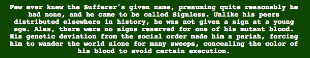
KARKAT’S ANCESTOR!
I remember him being referred to as the sufferer, or having it implied anyway, and yaaay, my patience has paid off and I get to find out what it means, at last!
In time, the visions gave purpose to his travels. He would preach heretical ideas no one else had dared to entertain, let alone risk discussing. He espoused the virtues of forgiveness, compassion, and equality among all bloodlines. He distributed his message intelligently, careful to preach only to those receptive, never attracting unwelcome attention. But his growing movement could go unnoticed by the authorities for only so long.
Karkat’s ancestor, espousing the virtue of forgiveness and compassion?
Actually now that I think about it, that makes sense. He’s an angry guy, but he’s also very understanding and he really doesn’t seem very good at holding grudges. He doesn’t seem to care much about the hemospectrum, either.
The highbloods were livid over the unprecedented heresy, and soon, a massive sectarian war followed, spreading across the planet and throughout the galaxy. The conflict was lopsided of course, with the Highbloods given full support from the Condesce and her sea dwellers. Inevitably, the Signless would be captured, and when he was, it was not a matter of whether he would be put to the irons, but how hot they would be if he failed to recant.
Oh shit, poor Signless. Fuck the highbloods.


Well, now we know where the symbol came from!
Righteous Leggings?
Vast Expletive?
Is Karkat’s ancestor then some kind of Jesus? I assume he’s not Jegus, since all the trolls seem to use that term and they really don’t seem to have accepted his teachings. Then again, Jesus’s literal teachings aren’t very popular in general and that doesn’t stop anyone from loving him.
Ooops, I got politics in my liveblog.
His teachings would also persist through surviving disciples, but in hushed tones. His following would dwindle to an obscure cult facing persecution for centuries. After his execution, the body was burned leaving only his irons. They cooled in the ash, as if his anger itself was subsiding, and his followers appropriated their shapes in defiance of the Highbloods. The symbols became the sign of the Signless, always shown as colorless as the cold iron, to conceal the stigma of his hue. This was as much a reminder to his followers to remain hidden as it was of the Sufferer’s sacrifice, and his rage hidden like heat in the iron, one day to be reignited by another of his bloodline.
Woah, so Karkat wasn’t just being obstinate about covering up his blood color, he was making a big political statement with the grey text and symbol.
I like him so much more now!

Hmmm, what is Hussie up to there, lurking around on top of the page? I sense more meta is on its way.
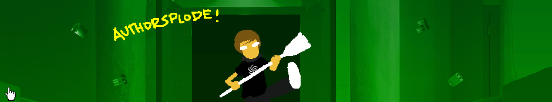
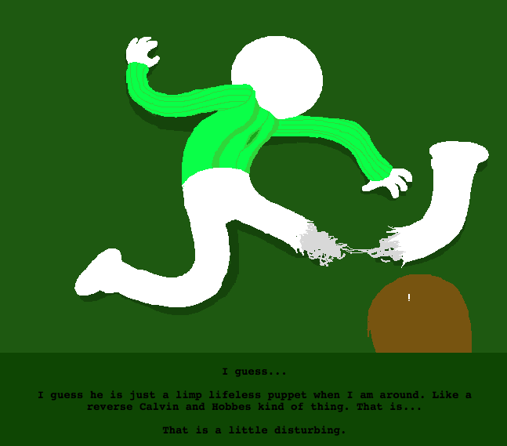
Oh my god, you guys, this is so meta I don’t know what to do. Hussie himself shows up to beat the crap out of one of his characters, and then of course the guy is really just a tool and Hussie was the one controlling him all the time. Well, except that apparently he’s not a limp, lifeless puppet when Hussie isn’t around, but stop playing games, man, you’re the one writing wanky explanations of troll history.
Which I am kind of sad to be deprived of.
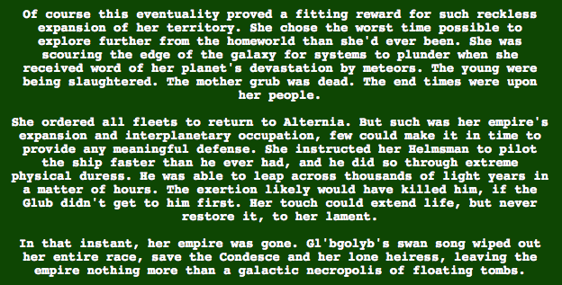
Man though, isn’t that just always the problem with empires? They get too big to protect everything!
Her real fault was not creating a redundant reproductive system on another planet. You can’t trust the entire future of your race to one area!
I mean, the Glub means that that wouldn’t have solved anything, but the lesson here is still diversify and create back ups!
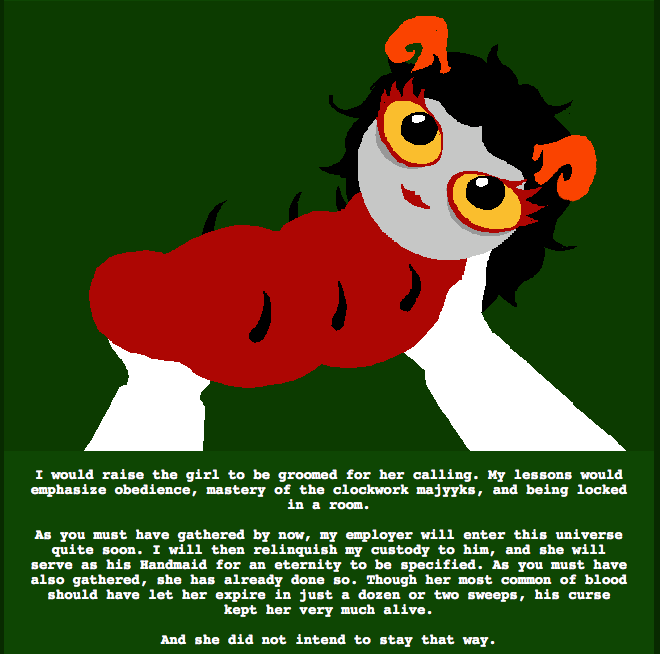
Aradia’s ancestor grub is so cute! Lookit that adorable thing! I want to pinch her little cheeks.
Also, woah, having red blood means you have a lifespan of 24-48 years? That blows.
So bladekindeyewear walked me through a redo of Seer: Descend to see the stuff I missed as a way to test having both of us on the line at the same time, to do it on a later video. How’d it turn out?
LOOK IT’S [S] CASCADE!!!!
Bladekindeyewear joined me for this one, to help explain things, and it was great fun!
The following flashes are on their way in a second video.
And now audio reactions to [S] Begin intermission 2 and [S] ACT 6
With Bladekindeyewear again! And at the end he explains stuff to me.

I BET I KNOW WHO GRANDMA IS!
The past tense there is a bit worrying, though.

I totally had the same problem. I liked all movies, and people were mean about it, so I stopped liking any movies, and then they were mean about that. Nostalgia time!
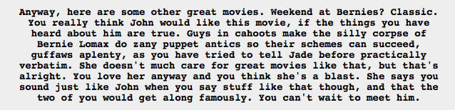
Woah woah woah, he knows who John and Jade are?
I was absolutely not expecting this. And I guess Jade wouldn’t be his grandma, because if she was he wouldn’t be calling her by her first name? I suddenly have no idea what’s going on.

That last name is incredibly questionable and very worrisome!
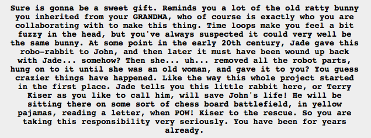
OH EM GEE, Bladekindeyewear! Now I get what you were aiming at!
I love these moments, where suddenly things make a lot of sense. It’s just awesome. This is how John had a grandson!
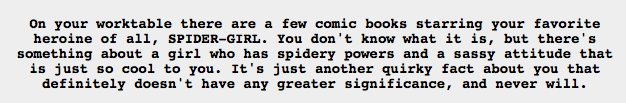
Dear sweet lord, you have got to be kidding me. It’s just gotten all kinds of Sailor Moon up in here.

Oh fuck, Jake English is wearing a coat uncomfortably similar to Lord English’s. Fuuuuck that’s not good. It says he inherited it from his grandma, who I thought was Jade, but maybe I’m wrong.

So Bro has a really advanced AI away message thinger. Iiiiiinteresting.
And robot parts everywhere.
And he’s apparently not socially awkward which makes me ever so sad.
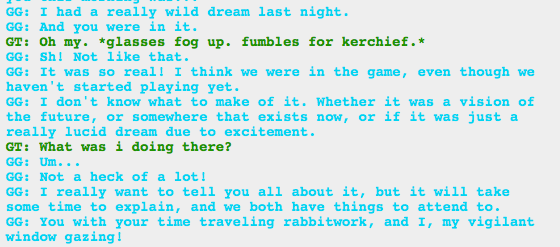
Oh, fantastic. More psychic dreaming. Everybody’s got to have some eerily accurate dreams of the future these days.

Fuuuuuuck I recognize that symbol. That’s the Condesce’s symbol. Who teamed up with Lord English and is now apparently head of Betty Crocker. Fuuuck.
And Jane’s spoon is making her super loyal to BC. Not cool! D:
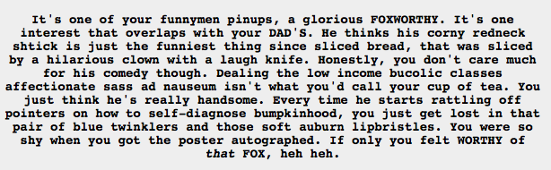
I don’t even know what to say with this. I just appreciate the terrible pun at the end.
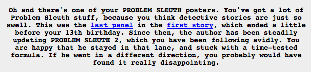
Oh my god, so much meta right here. Soooo much meta.
Although didn’t Homestuck exist in Earth1? So Earth2 has no Homestuck, but does have Problem Sleuth 2.
Pap. Shhhhhh.
This video was sooo fucking cute. All of the awwws.
And now we have serious confirmation of how moiraillegiance works!
Ah, this? :)
The main idea behind it was the Green Sun’s creation.
Many, many people miss the fact, during Cascade, that the Green Sun is created rather than destroyed, because of how it’s visually conveyed. I missed it too, back when the flash came out! And it’s about 50/50 for people I’ve asked about it… moreso for someone who explicitly has mentioned they have problems identifying the visual conveyances of flashes and panels.
Realizing that the Green Sun was created instead of destroyed is a, if not the, major twist of the flash. And if you realize it during your first watch of the flash, your total enjoyment of the flash is dramatically better… making a miss of the fact a real missed opportunity. Ever since this trend of Homestuck Livebloggers started, I’ve been perpetually afraid that each given liveblogger might miss that element of Cascade during their watch, and that not only would they enjoy the epic flash less, but also we wouldn’t be able to see their reaction, which is usually excellent if they get it.
Having someone sit beside them somehow — in this case, me, via Skype — is the only way to guarantee they won’t miss it. And afterwards, homestuckbecausereasons agreed with me that she was indeed able to enjoy this particular experience better with a guide, which eased any concerns I had about the idea. :) Plus I got to tell her other things she would have to have answered a dozen asks about otherwise in the subsequent flashes, like Doc being an excellent host or the Grandpa/Grandson swap she didn’t figure out earlier.
As for how I “got past” her ask screener, I’m actually the one who put her up to liveblogging the rest of her Homestuck read in the first place! :) I told her to get an ask screener, which she did, but I still have that direct line to her. I’ve cleared up other questions she’s had via IM throughout her readthrough, and have tried hard to keep my communications spoiler-free.
Bladekindeyewear and I chat on AIM all the time! My screener has been really busy lately, so he’s the one who usually gets pestered if I have a question.
It was really fun watching it with him on Skype, actually, especially since we’ve established I have trouble noticing visual things. And I have a shitty memory for so much going on.
If only you could see my face right now! The look of gleeful surprise! (Seriously, I need a word for this emotion, because I am feeling it constantly with this thing.)
Oh man, I had totally just assumed that having to fight one’s grandfather/dad would be hard emotionally, and now realizing that Jake is somehow related to Lord English (or something), I am just squeeing at the idea! So excited to find out what all of this means!
Oh, I got that! I meant to say (but I guess did not) that it was lucky they didn’t ~destroy~ the Green Sun, since Jade would now be drawing power from it, and along with the Godtier powers would probably be a serious threat to Jack.
And then of course they created the Green Sun instead, so I guess that point is moot. But either way, super!Jade is completely awesome.

I’m not sure what this is getting at, but I have made a note for future reference!

So, when I said that Karkat was making a political statement with the symbol/color, this is what I was thinking of. There’s Redglare (right?) wearing the symbol (although I think right then it’s more of a secret) to signify that she’s a follower of the Signless/Sufferer, so maybe Karkat wearing the symbol is also a political statement, and not just a “Fuck you my blood is private” thing.
I mean, he did say that he thinks the hemospectrum caste system is stupid, too. But that could also be a cover up for his candy apple red blood. Probably a chicken or the egg thing.

I went to get a picture of Feferi’s crown, and one of the Condesce’s crown, to compare to something I just found for Jane, except it just really hit me that in reaction to the “Do something adorable” command, Feferi fed some other troll’s guardian to her monster lusus.
Feferi is not having any of your gendered demand that she be cute! Go tell Eridan to be cute, why don’t you!
Soooooo. Jane’s computer tiara is basically the same as Feferi’s tiara, except red. And also a computer. Iiiiinteresting.
Also I just realized that the pisces symbol looks like it could be a 2x3dent. I’m not sure if that’s relevant, or to what degree, since it makes sense for Feferi to have the pisces symbol. Then again, if the cancer symbol is supposed to be the world’s weirdest handcuffs, the pisces symbol could be the 2x3dent, and maybe the other symbols make sense in ways that have yet to be revealed or that I can’t currently figure out.
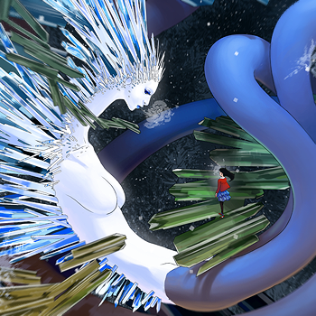
That one? She is creepy pretty!
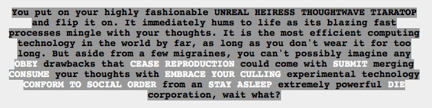
Oh for fuck’s sake, now white text is showing up from Jane’s tiara computer?
I mean, I guess it makes sense, since Betty Crocker is somehow related to the Condesce, who is AFAIK the servant of Lord English, and maybe Lord English types like Doc Scratch or maybe we’re back with that bastard, but…seriously.

Devilfucking dickens!
There is nothing about this picture that I do not like.

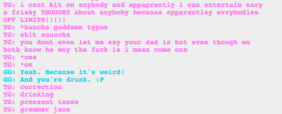
MY GOOD LADY!
I saw references to them being over 13 this time around, but there’s no way she is legal!

I really hope TG (calling her mom is jsut weird) is legit a good hacker. That would be cool. But I can’t figure out what she’s talking about past the typos everywhere.

I’m sure that will never come up again!
Total coincidence.
I’m finding this section incredibly boring. I’m flipping through most pages unreasonably fast.
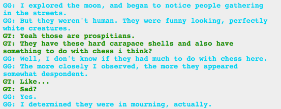
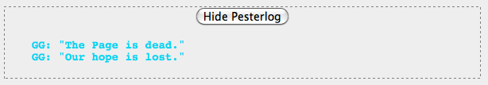
Well fuck.
We’ve determined that Jake is the Page of Hope. We’ve also determined that he has something to do with Lord English. And now the Page is dead. That can’t be good.

For real?
I mean, the pumpkins make sense, but what is the lab doing there? Especially if it’s just all broken and stuff. Earth got reset, so like…hmm…

OMINOUS SHADOW IS OMINOUS.
Someone please take TG’s booze away so I can actually read the chatlogs. And I thought the trolls were bad!
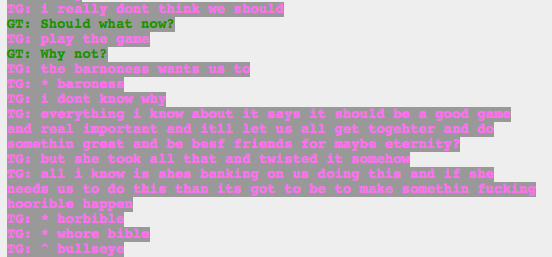
Back to highlighting text, because right now that pink text is terrible!
Whore bible is perfection.
TG (god, do I ever get her name? fuck it) Lalonde has a super good point. I mean, not playing the game isn’t exactly an option, but they’re being manipulated by somebody, too. Honestly, I’m now realizing that the storyline right now is basically the characters being manipulated and controlled by some omniscient and omnipotent entity, and it’s kind of a terrible feeling, knowing that probably everything they’re doing is leading to something nefarious.